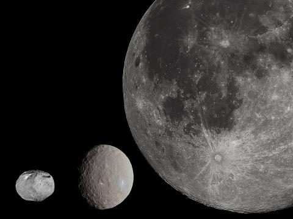

과학뉴스

태양 주위를 돌고 있는 행성보다 작은 천체를 소행성(Asteroid)이라고 한다.
화성과 목성 궤도 사이에 있는 소행성대에서 1801년 세레스(Ceres)가 발견된 이후 소행성 발견이 줄을 이었고 지금까지
23만 여개를 찾아냈다. 그동안 우주과학자들은 소행성이 자전하면서 지구처럼 중력을 만들어내고 있어 그 위에
착륙해도 우주 바깥으로 튕겨나가지 않으며 고에너지의 우주선(cosmic ray)으로부터 안전을 도모할 수 있다고 보고 있었다.
소행성에서 ‘우주광물’ 채굴 가능
38% 중력값, 우주정거장 설치해 거주도 가능
태양 주위를 돌고 있는 행성보다 작은 천체를 소행성(Asteroid)이라고 한다.
화성과 목성 궤도 사이에 있는 소행성대에서 1801년 세레스(Ceres)가 발견된 이후 소행성 발견이 줄을 이었고 지금까지
23만 여개를 찾아냈다. 그동안 우주과학자들은 소행성이 자전하면서 지구처럼 중력을 만들어내고 있어 그 위에
착륙해도 우주 바깥으로 튕겨나가지 않으며 고에너지의 우주선(cosmic ray)으로부터 안전을 도모할 수 있다고 보고 있었다.
“소행성 중력값 화성과 유사한 수준”
10일 ‘사이언스 얼럿(Science Alert)’에 따르면 오스트리아 빈 대학교 연구팀이 가상의 소행성에 새로운 중력 모형을 적용,
390 × 500m 영역의 소행성 중력값을 측정해냈다. 빈 대학 연구팀이 추출한 소행성의 중력값은 지구의 38%로 화성과 유사한 것이다.
그리고 이 중력값에 따라 소행성이 굳은 바위로 구성돼 있으며, 그 표면에 우주정거장을 설치할 경우 안전한 거주가 가능하다는 결론에 도달했다.
빠른 속도로 비행하고 있는 소행성에서 예상보다 강한 중력이 존재하는 것은 자전에 의한 원심력 때문이다.
연구팀은 논문을 통해 “중력값에 따라 채굴 장비를 설치할 경우 소행성 바위 속으로 굴착이 가능하며,
바위 속으로 형성된 동굴 안에 우주정거장을 설치할 경우 우주인의 안전한 거주가 가능하다”고 말했다.
연구팀은 “이번에 발전시킨 새로운 중력 모형에는 최근에 발견한 소행성 ‘3757 아나골레이(3757 Anagolay)’,
‘99942 아모피스(99942 Apophis)’, ‘3361 오르페우스(3361 Orpheus)’의 상황을 적용했다”고 밝혔다.
“20년 후에는 소행성에서 채굴 가능할 것”
그동안 소행성에서의 채굴과 관련된 많은 주장이 있어 왔으나, 이론에 불과했다. 막상 그 일을 시작하려면 안전을 보장하기 위한 근거가 필요했다.
이러한 상황에서 이번 논문이 중력 모형을 통해 소행성 중력을 측정하고, 이 중력 하에서 어떤 식으로 채굴 작업이 가능한지
구체적인 소행성 채굴 및 거주 계획을 제시함에 따라 세계적인 관심이 쏠리고 있다.
하지만 소행성 채굴을 위해 입증해야 할 과제는 아직 남아 있다.
마인들 교수는 “소행성에 따라 자전 속도가 달라 소행성 상황에 따라 계획을 조절해야 한다”고 말했다.
현재 우주강대국들은 소행성 치열하게 탐사경쟁을 벌이고 있는 중이다.
일본과 미국의 탐사선은 지난해 각각 태양 궤도를 돌고 있는 소행성에 도착했으며 소행성 표면에 직접 착륙하거나 근접해 지표면의 토양을 채취할 계획이다.
마인들 교수는 “소행성에 대한 비밀이 속속 밝혀지고 있어 향후 20년 후에는 소행성 채굴이 가능할 것”이라고 말했다.